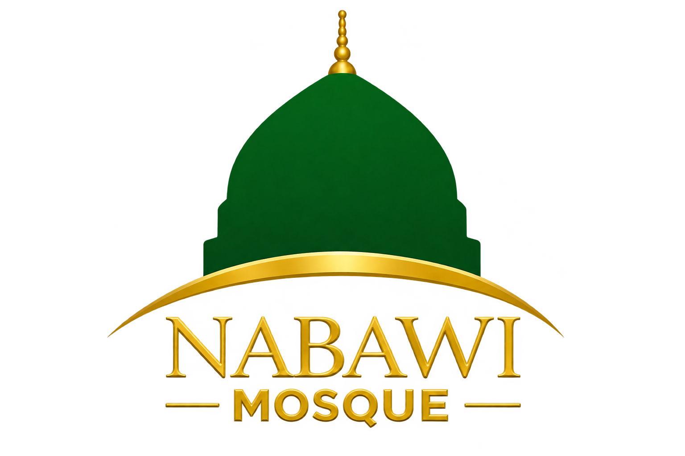

Peringkat 1: Pembinaan Insan
Memfokuskan pembangunan spiritual dan pembentukan karakter individu bermula dari masjid.

“Membina Insan, Muafakat Masyarakat Dan Kesejahteraan Bersama”
Alif–Mim–Sin
HASIL: Jemaah yang teguh iman, istiqamah beribadah, dan berakhlak mulia.
Gagasan besar memerlukan jentera penggerak. Penglibatan masyarakat distrukturkan secara strategik mengikut kepakaran dan keperluan kariah
Model Masjid Sejahtera — Wadah Penglibatan Komuniti, Profesional & Agensi Kariah
* Portfolio Sahabat Agensi merangkumi jalinan strategik agensi kerajaan, institusi pendidikan & badan bukan kerajaan (NGO).
Dilaksanakan secara tersusun, bersama-sama, dan berperingkat.
Memfokuskan pembangunan spiritual dan pembentukan karakter individu bermula dari masjid.
Mengukuhkan asas institusi kekeluargaan menerusi peranan teras seorang ibu.
Memupuk penyatuan dan mengukuhkan ikatan muafakat sesama anggota komuniti.
Meluaskan impak pembangunan sosial positif bagi mencapai kesejahteraan negara secara menyeluruh.
Apabila Alif, Mim, dan Sin disatukan, masjid tidak lagi sekadar ruang persinggahan, tetapi bertukar menjadi nadi yang menggerakkan peradaban—bermula dengan pemerkasaan jiwa, disatukan oleh muafakat, dan dilebarkan jangkauannya demi kesejahteraan umat manusia.